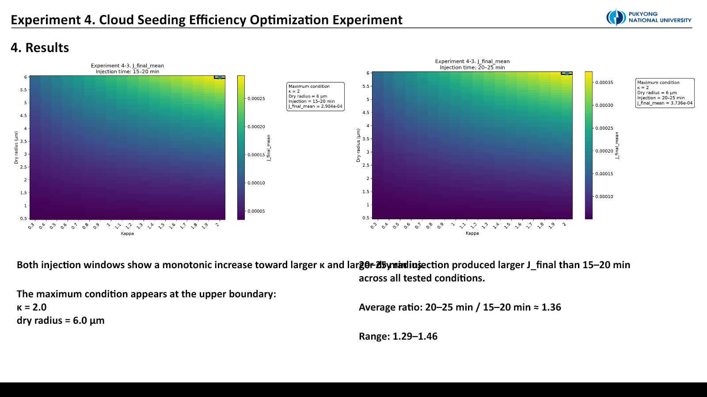
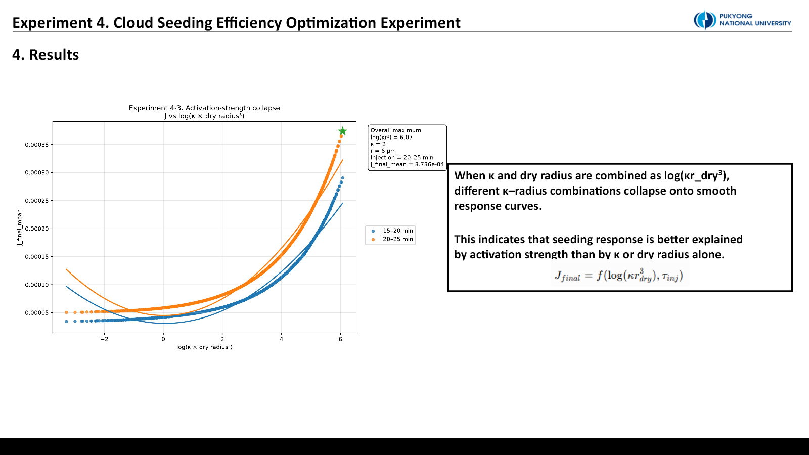
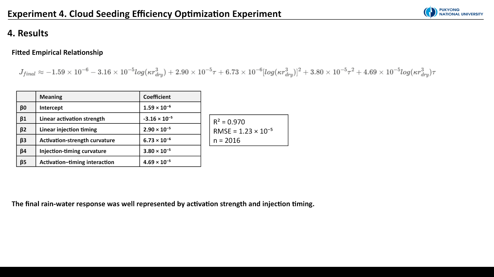

Experiment 4. κ–입자크기–주입시점 Response Surface
이 실험은 PySDM-Seeding-Lab에서 실행하지 않았다. 연구실 서버와 Visual Studio Code에서 별도 스크립트로 수행한 PySDM 실험이다. 아래의 “최대”는 시험한 parameter range 안의 결과이며 운영 최적값이 아니다.
질문: 시딩 response를 하나의 경험식으로 정리할 수 있을까
앞선 실험은 dry radius, κ, injection timing을 한 축씩 바꿨다. 그러나 κ와 입자 크기는 activation에서 독립적이지 않으며, 주입 시점은 입자 성장 가능 시간과 cloud maturity를 함께 바꾼다.
Experiment 4는 다음을 묻는다.
- Rain-water response는 dry radius와 κ 중 어느 쪽에 더 민감한가?
- 두 입자 성질을 \(kappa r_{dry}^3\)라는 activation-strength variable로 묶을 수 있는가?
- Injection timing은 particle activation strength와 상호작용하는가?
- 최종 response를 경험적 response surface로 표현할 수 있는가?
왜 Experiment 4-3을 main dataset으로 썼나
4-1은 초기 response-surface 구조를 확인했고, 4-2는 dry radius를 10 µm까지 넓혔다. 큰 response가 나타났지만 large seed 자체가 25 µm rain threshold를 넘는 효과가 지배적이어서 해석 범위를 흐렸다.
4-3은 dry radius 0.5–6.0 µm로 범위를 좁히고 0.1 µm 간격의 조밀한 grid를 만들었다. 4-1과 4-2는 실패가 아니라, main dataset의 해석 가능한 범위를 정한 preliminary/diagnostic step이다.
실험 grid와 목적함수
collision = ON
terminal velocity = RogersYau
κ = 0.3–2.0, step 0.1 → 18 values
dry radius = 0.5–6.0 µm → 56 values
injection = 15–20 / 20–25 min
ensemble seeds = 20
t_max = 30 min총 조건은 \(18\times56\times2=2{,}016\)개다. 각 조건은 20개 ensemble seed로 실행하고 고정된 no-seeding baseline과 비교했다. Main metric은 최종 rain-water difference \(J_{final}\), 보조 지표는 양의 response 시간적분과 maximum response다.
결과 1. 큰 κ와 큰 dry radius 방향으로 단조 증가했다

두 injection window 모두 큰 κ와 큰 dry radius 방향으로 response가 증가했다. Dry radius의 효과가 더 강하고 거의 단조로웠으며, κ도 더 약하지만 일관된 양의 효과를 보였다. κ 방향의 1,904개 인접 비교 중 감소는 한 경우뿐이었다.
20–25분 주입은 모든 시험 조건에서 15–20분보다 큰 \(J_{final}\)을 보였다. Late/early ratio 평균은 약 1.36, 범위는 1.29–1.46이었다. 이는 이 설정에서 더 성숙한 parcel에 주입할 때 입자 activation과 rain-size growth가 함께 강화됐음을 보여준다.
시험 범위의 최대는 κ = 2.0, dry radius = 6.0 µm, 20–25 min의 upper boundary에 있었다. 경계에서 최대가 나왔으므로 보편적 optimum이 아니라 이 grid 안의 maximum으로만 해석한다.
결과 2. Activation strength와 timing을 함께 써야 했다
Köhler-like activation coordinate를 다음처럼 정의했다.
\[ A = \log\!\left(\kappa r_{dry}^{3}\right) \]
최종 response는 activation coordinate \(A\)와 injection coordinate \(\tau\)의 이차식으로 fitting했다.
\[ J_{final}=\beta_0+\beta_1A+\beta_2\tau+\beta_3A^2+\beta_4\tau^2+\beta_5A\tau+\epsilon \]

두 injection window는 하나로 겹치지 않고 분리된 curve를 만들었다. 즉 timing은 독립적인 일정 offset이 아니라 particle strength와 상호작용한다. Positive interaction term은 강한 입자와 늦은 주입이 서로의 효과를 보강했음을 나타낸다.
경험식 fit
| 항 | 계수 |
|---|---|
| \(\beta_0\) intercept | \(1.59\times10^{-6}\) |
| \(\beta_1\) activation linear | \(-3.16\times10^{-5}\) |
| \(\beta_2\) timing linear | \(2.90\times10^{-5}\) |
| \(\beta_3\) activation curvature | \(6.73\times10^{-6}\) |
| \(\beta_4\) timing curvature | \(3.80\times10^{-5}\) |
| \(\beta_5\) activation × timing | \(4.69\times10^{-5}\) |

Fit 성능은 \(R^2=0.970\), RMSE \(=1.23\times10^{-5}\), \(n=2{,}016\)이었다. 이 높은 설명력은 현재 고정 background, collision model, rain threshold, parameter normalization 안에서의 경험적 압축이다. 물리 법칙이나 외부 환경에 대한 검증을 뜻하지 않는다.
해석과 제한
Dry radius는 \(r^3\)의 부피 효과로 activation strength에 강하게 들어가며, 시험 범위에서는 κ보다 response를 더 크게 지배했다. κ는 activation barrier를 낮추고 물 흡수를 돕는 방향으로 일관되게 작용했다. Late injection은 cloud parcel이 더 성숙한 상태에서 시딩 입자가 rain-water growth에 기여하도록 했다.
하지만 이 실험은 collision ON, 한 background, 두 absolute-time window, fixed seeding design에 한정된다. 또한 25 µm threshold와 30분 종료 시점이 목적함수에 들어간다. 따라서 식을 다른 cloud state나 실제 살포 효율에 그대로 적용하면 안 된다.
결론. 시험한 범위에서 \(J_{final}\)은 \(\log(\kappa r_{dry}^3)\)와 injection timing으로 잘 정리됐고, dry radius가 주효과, late injection이 강화효과를 보였다. 그러나 upper-boundary maximum은 보편적 최적값이 아니라 다음 grid를 어디로 확장할지 알려주는 표지다.
다음 연구
다음 response law에는 네 요소가 더 필요하다.
- Fixed particle number와 fixed dry mass를 분리한 seeding-dose normalization
- Clean/moderate/polluted background aerosol sensitivity
- Absolute time 대신 updraft와 cloud maturity를 반영한 injection coordinate
- Particle property, dose, background, cloud state를 함께 쓰는 generalized law